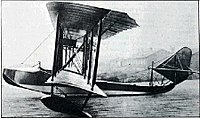

В 1902—1903 годах в Красном Селе, Бресте и Вильно прошли маневры, в ходе которых проверялись способы использования воздушных шаров в интересах артиллерии и для воздушной разведки. По итогам испытаний было принято решение о создании специальных подразделений при крепостях в Варшаве, Новгороде, Бресте, Ковно, Осовце и на Дальнем Востоке. Общее количество шаров составило 65. В 1908 году в России приступили к изготовлению дирижаблей.
Гидросамолёт М-5:
Однако в это же время уже велись исследования в сфере летательных аппаратов тяжелее воздуха. В 1904 году в Кучино был создан аэродинамический институт, руководителем которого стал выдающийся русский ученый Николай Жуковский, создатель аэродинамики (и гидродинамики). В институте велись работы, направленные на улучшения авиационной техники. В это же время российский конструктор Дмитрий Григорович начинал свои работы над созданием первых в мире гидросамолётов. До начала Первой мировой войны были открыты первые лётные училища. Николай Егорович Жуковский В 1908 году в Петербурге был открыт Всероссийский аэроклуб. Во Францию отправили члена аэроклуба В. А. Лебедева для освоения искусства пилотирования, дабы впоследствии использовать его в качестве инструктора. Лебедев закончил обучение у самого Анри Фармана в июне 1910 года и с дипломом вернулся на родину. В марте 1910 года отдел воздушного флота командирует во Францию для обучения лётной специальности семерых русских офицеров. Капитаны Л. Мациевич и С. Ульянин направлялись в школу Фармана, Г. В. Пиотровский (заменил капитана 2 ранга А. А. Яновича, который попал в аварию) и Б. В. Матыевич-Мацеевич — в школу Блерио, М. М. Зеленский и М. С. Комаров — в школу завода Левассера. Также во французские авиационные школы были отправлены шесть наиболее подготовленных нижних чинов для освоения специальностей авиамехаников и мотористов. Одновременно, на изготовление и поставку в Россию к июню 1910 года, был сделан заказ мастерским Фармана, Блерио и Левассера одиннадцати самолётов. 21 октября 1910 года лётчиком Е. Рудневым (с механиком С. Плотниковым) на аэроплане Фарман-III был совершён первый в России междугородний перелёт — из Санкт-Петербурга в Гатчину. Великий князь Александр Михайлович 8 ноября 1910 года официально открыл первую русскую военно-авиационную школу, на базе Всероссийского аэроклуба в Петербурге, а 14 ноября здесь начались учебные полёты. Международная воздухоплавательная выставка В том же году открылась Севастопольская авиашкола его имени, менее чем через год состоялся выпуск военных летчиков России. В апреле 1911 года Русским техническим обществом была организованна Первая Международная воздухоплавательная выставка. Выставка проходила в Санкт-Петербурге в Михайловском манеже. За все время работы выставку посетило более 200 тыс. человек. Выставка имела огромный успех и привлекла внимание всех крупных производителей аэропланов — как русских, так и зарубежных[8]. До лета 1912 года авиация и воздухоплавание считались составной частью инженерного дела и находились в ведении воздухоплавательного отдела Главного инженерного управления Военного министерства. 12 августа 1912 года приказом по военному ведомству вопросы воздухоплавания и авиации были изъяты из ведения Главного инженерного управления и переданы специально созданному органу — Воздухоплавательной части Генерального штаба, которую возглавил генерал-майор М. И. Шишкевич. Эта дата считается днём образования военной авиации России. 27 августа 1913 года в Киеве над Сырецким полем П. Н. Нестеров впервые в мире выполнил на самолёте «Ньюпор—4» с двигателем «Гном» в 70 л. с. замкнутую петлю в вертикальной плоскости. Этим манёвром Нестеров положил начало высшему пилотажу. Предтечей первых авиационных заводов в Российской империи стали мастерские, в которых ремонтировались самолеты иностранных лётчиков, прибывавших в Россию на гастроли. Вскоре, однако, начали поступать появились заказы не только на починку, но и на производство новых самолетов. Русская авиационная промышленность зародилась в 1909 году, а еще через год начала выпускать самолёты. Первенцем российского авиастроения стал биплан «Россия-А», выпущенный заводом «Первого всероссийского товарищества воздухоплавания» на основе конструкции Анри Фармана.